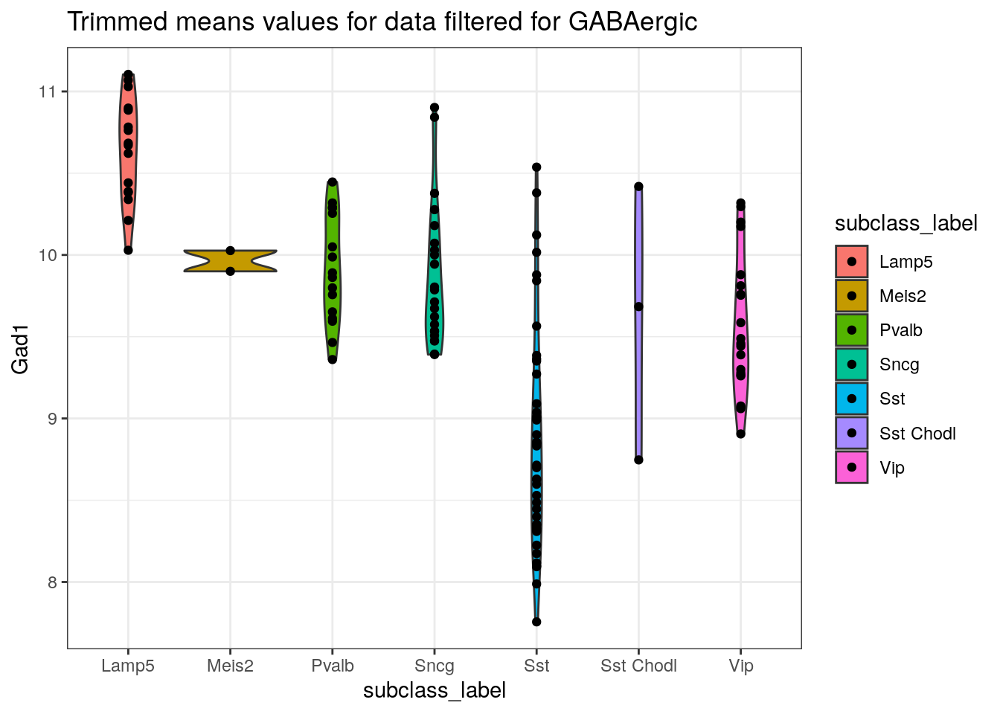

This is a data wrangling example from the Mouse Whole Cortex and Hippocampus 10x dataset.
Recently, a UAB collaborator, Dr. Farah Lubin and her lab, asked U-BDS to summarize a subset of the the Allen Brain Map data derived from the Mouse Whole Cortex and Hippocampus 10x dataset. A driver for this request was due to the limitation in the dataset that is provided directly from the website. For example, while users can choose to view any gene per celltype https://celltypes.brain-map.org/rnaseq/mouse_ctx-hpf_10x?selectedVisualization=Heatmap&colorByFeature=Cell+Type&colorByFeatureValue=Gad1, it’s difficult to summarize the data based on cell classes. In this example, we illustrate how you can start from the data available at the Allen Brain Atlas website, to interpret the data in more detail.
The gene list in this example differs from the original request by Dr. Lubin, and user can choose change it to any gene list of interest.
subclass_label/cell_type_alias_label.To stay consistent with what the user sees in the app, the input data is the trimmed mean expression values which are available from the download pages cited above.
In addition, the metadata file is also needed.
In the README from the data download page, we find the following
information about the medians.csv which was generated in a
similar manner as the trimmed means file.
medians.csv file
Medians (medians.csv) A table of median expression values for each gene (rows) in each cluster (columns). Medians are calculated by first normalizing gene expression as follows: norm_data = log2(CPM(exons+introns)), and then calculating the medians independently for each gene and each cluster. The first row lists the cluster name (cluster_label), which matches the cell type alias shown in the Transcriptomic Explorer. The first column lists the unique gene identifier (gene), which in most cases is the gene symbol.
The medians.csv (“Gene Expression by Cluster, median”)
is briefly described from the data download page with:
Gene expression aggregated per cluster, calculated as medians.
Similarly the trimmed means values (“Gene Expression by Cluster, trimmed means”), is described as:
Gene expression aggregated per cell type, calculated as trimmed means (25%-75%).
The metadata description is:
Metadata about each cell. Each entry has an _order, _label, and _color column.
Since the trimmed mean expression values are readily available, we
will summarize this by metadata available in the
metadata.csv.
library(ggplot2)
library(dplyr)The files needed were downloaded and placed into the
./data sub-directory from this project which follows the
general standard practice for R projects (see more at: https://swcarpentry.github.io/r-novice-gapminder/02-project-intro/index.html).
trimmed_mean_expression <- read.csv("./data/Allen_Brain_Map_mouse_sc_data/trimmed_means.csv", check.names = FALSE, row.names = 1)
metadata <- read.csv("./data/Allen_Brain_Map_mouse_sc_data/metadata.csv")# If unfamiliar with dataset, please look over the metadata in more detail, View(metadata), for better understanding of all the information present here
# but here is a quick overview of some key features
str(metadata)## 'data.frame': 1169213 obs. of 57 variables:
## $ sample_name : chr "ACGCAGCAGACCGGAT-L8TX_180221_01_C11" "CCATGTCAGCGCTTAT-L8TX_180221_01_C11" "GCGCAGTAGTGTCTCA-L8TX_180712_01_H05" "GTCACGGCACCAACCG-L8TX_180712_01_H05" ...
## $ donor_sex_id : int 2 2 2 2 2 2 2 2 2 2 ...
## $ donor_sex_label : chr "M" "M" "M" "M" ...
## $ donor_sex_color : chr "#ADC4C3" "#ADC4C3" "#ADC4C3" "#ADC4C3" ...
## $ region_id : int 20 20 21 21 21 21 21 21 21 21 ...
## $ region_label : chr "RSP" "RSP" "TEa-PERI-ECT" "TEa-PERI-ECT" ...
## $ region_color : chr "#2B9EAD" "#2B9EAD" "#76CBE2" "#76CBE2" ...
## $ platform_label : chr "10X" "10X" "10X" "10X" ...
## $ cluster_order : int 116 364 18 15 18 18 18 15 18 18 ...
## $ cluster_label : chr "116_Pvalb" "364_DG" "18_Lamp5" "15_Lamp5" ...
## $ cluster_color : chr "#EC2D46" "#413BE2" "#D97C80" "#A6666F" ...
## $ subclass_order : int 8 36 3 3 3 3 3 3 3 3 ...
## $ subclass_label : chr "Pvalb" "DG" "Lamp5" "Lamp5" ...
## $ subclass_color : chr "#D93137" "#394FD3" "#DA808C" "#DA808C" ...
## $ neighborhood_id : int 2 7 1 1 1 1 1 1 1 1 ...
## $ neighborhood_label : chr "MGE" "DG/SUB/CA" "CGE" "CGE" ...
## $ neighborhood_color : chr "#ED892E" "#9AB7E2" "#CC93C2" "#CC93C2" ...
## $ class_order : int 2 1 2 2 2 2 2 2 2 2 ...
## $ class_label : chr "GABAergic" "Glutamatergic" "GABAergic" "GABAergic" ...
## $ class_color : chr "#F05A28" "#00ADEE" "#F05A28" "#F05A28" ...
## $ exp_component_name : chr "ACGCAGCAGACCGGAT-L8TX_180221_01_C11" "CCATGTCAGCGCTTAT-L8TX_180221_01_C11" "GCGCAGTAGTGTCTCA-L8TX_180712_01_H05" "GTCACGGCACCAACCG-L8TX_180712_01_H05" ...
## $ external_donor_name_label : int 373822 373822 395345 395345 395345 395345 395345 385670 385670 385670 ...
## $ full_genotype_label : chr "Snap25-IRES2-Cre/wt;Ai14(RCL-tdT)/wt" "Snap25-IRES2-Cre/wt;Ai14(RCL-tdT)/wt" "Snap25-IRES2-Cre/wt;Ai14(RCL-tdT)/wt" "Snap25-IRES2-Cre/wt;Ai14(RCL-tdT)/wt" ...
## $ facs_population_plan_label : chr "RFP-positive" "RFP-positive" "RFP-positive" "RFP-positive" ...
## $ injection_roi_label : logi NA NA NA NA NA NA ...
## $ injection_materials_label : logi NA NA NA NA NA NA ...
## $ injection_method_label : logi NA NA NA NA NA NA ...
## $ injection_type_label : logi NA NA NA NA NA NA ...
## $ full_genotype_id : int 67 67 67 67 67 67 67 67 67 67 ...
## $ full_genotype_color : chr "#E726" "#E726" "#E726" "#E726" ...
## $ external_donor_name_id : int 454 454 507 507 507 507 507 488 488 488 ...
## $ external_donor_name_color : chr "#C14D" "#C14D" "#99177F" "#99177F" ...
## $ facs_population_plan_id : int 6 6 6 6 6 6 6 6 6 6 ...
## $ facs_population_plan_color : chr "#4C2E99" "#4C2E99" "#4C2E99" "#4C2E99" ...
## $ injection_materials_id : int 1 1 1 1 1 1 1 1 1 1 ...
## $ injection_materials_color : chr "#FF7373" "#FF7373" "#FF7373" "#FF7373" ...
## $ injection_method_id : int 1 1 1 1 1 1 1 1 1 1 ...
## $ injection_method_color : chr "#FF7373" "#FF7373" "#FF7373" "#FF7373" ...
## $ injection_roi_id : int 1 1 1 1 1 1 1 1 1 1 ...
## $ injection_roi_color : chr "#FF7373" "#FF7373" "#FF7373" "#FF7373" ...
## $ injection_type_id : int 1 1 1 1 1 1 1 1 1 1 ...
## $ injection_type_color : chr "#FF7373" "#FF7373" "#FF7373" "#FF7373" ...
## $ cell_type_accession_label : chr "CS202106160_116" "CS202106160_364" "CS202106160_18" "CS202106160_15" ...
## $ cell_type_alias_label : chr "116_Pvalb" "364_DG" "18_Lamp5" "15_Lamp5" ...
## $ cell_type_alt_alias_label : logi NA NA NA NA NA NA ...
## $ cell_type_designation_label: chr "CTX-HPF 116" "CTX-HPF 364" "CTX-HPF 018" "CTX-HPF 015" ...
## $ cell_type_designation_id : int 116 364 18 15 18 18 18 15 18 18 ...
## $ cell_type_alt_alias_id : int 116 364 18 15 18 18 18 15 18 18 ...
## $ cell_type_alias_id : int 116 364 18 15 18 18 18 15 18 18 ...
## $ cell_type_accession_id : int 116 364 18 15 18 18 18 15 18 18 ...
## $ cell_type_designation_color: chr "#EC2D46" "#413BE2" "#D97C80" "#A6666F" ...
## $ cell_type_alt_alias_color : chr "#EC2D46" "#413BE2" "#D97C80" "#A6666F" ...
## $ cell_type_alias_color : chr "#EC2D46" "#413BE2" "#D97C80" "#A6666F" ...
## $ cell_type_accession_color : chr "#EC2D46" "#413BE2" "#D97C80" "#A6666F" ...
## $ cortical_layer_label : logi NA NA NA NA NA NA ...
## $ cortical_layer_order : int 1 1 1 1 1 1 1 1 1 1 ...
## $ cortical_layer_color : chr "#FF7373" "#FF7373" "#FF7373" "#FF7373" ...In particular columns named class_label and
cell_type_designation_label contain cell classification
which is of high interest to the main goal.
unique(metadata$class_label)## [1] "GABAergic" "Glutamatergic" "Non-Neuronal"head(unique(metadata$cluster_label)) # same as metadata$cell_type_alias_label## [1] "116_Pvalb" "364_DG" "18_Lamp5" "15_Lamp5" "12_Lamp5" "11_Lamp5"unique(metadata$subclass_label)## [1] "Pvalb" "DG" "Lamp5" "Sncg" "Vip" "L2 IT ENTl" "Sst"
## [8] "L4/5 IT CTX" "L2/3 IT ENTl" "Meis2" "L5/6 NP CTX" "L5 PT CTX" "L5/6 IT TPE-ENT" "Sst Chodl"
## [15] "CA3" "L2/3 IT CTX" "L5 IT CTX" "L6 IT CTX" "L2/3 IT RHP" "L4 RSP-ACA" "L2/3 IT PPP"
## [22] "NP SUB" "CT SUB" "L6 CT CTX" "L3 IT ENT" "L6b/CT ENT" "NP PPP" "L5 PPP"
## [29] "L2 IT ENTm" "L6 IT ENTl" "CA1-ProS" "SUB-ProS" "Car3" "L6b CTX" "Oligo"
## [36] "CA2-IG-FC" "CR" "Astro" "SMC-Peri" "Micro-PVM" "Endo" "VLMC"Thus, the column names from the trimmed means files matches values in
metadata$cluster_label:
identical(sort(unique(metadata$cluster_label)),
sort(unique(colnames(trimmed_mean_expression)))
)## [1] TRUENow, since the variables which links the two input files have been identified, the data can be merged and summarized.
First, filter the metadata to only keep the variables of interest
highlighted above for simplicity. Do not keep sample_name
since the trimmed values are summarized per cluster rather then
single-cells. Further, since the original metadata has all information
per cell, further filter this output to keep unique rows.
If new metadata is needed in the future, modify the following to keep the needed data.
metadata %>%
select(class_label, cluster_label, subclass_label) %>%
unique(.) %>%
{.} -> metadataTranspose the trimmed means data.frame to have gene names as column
names and add a new column which contains the cluster_label
information (which are transposed as row names). This will allow us to
merge the metadata information into a new data.frame and summarize and
plot the data grouped by any variable that has been retained to this
point.
trimmed_mean_expression_transposed <- as.data.frame(t(trimmed_mean_expression))
trimmed_mean_expression_transposed$cluster_label <- rownames(trimmed_mean_expression_transposed)Merge the two data.frames to have all needed data in a single data.frame and save this new data. Note there is a single row that contains values (trimmed means), but no cluster information. We will keep this here in this version, but could be optionally removed.
trimmed_mean_with_metadata <- merge(metadata, trimmed_mean_expression_transposed, by = "cluster_label")
dir.create("results", showWarnings = FALSE)
write.csv(trimmed_mean_with_metadata, file = "./results/trimmed_means_with_selected_metadata.csv", row.names = FALSE)
# transposed version if that's preferred...
write.csv(t(trimmed_mean_with_metadata), file = "./results/trimmed_means_with_selected_metadata_transposed.csv", row.names = TRUE)For plotting and summarizing this data, all that is needed is the
data present in the trimmed_mean_with_metadata object
created in this workflow (or the file saved as
./results/trimmed_means_with_selected_metadata.csv).
The following are just some examples of what we may now do with this new file/data:
The goal here would be to generate data split by
subclass_label for only GABAergic class. This
should match the same values we see in the heatmaps available online but
gives us the flexibility of plotting is differently and also allows us
to verify that our data wrangling above was properly performed.
To perform this:
filter the data to contain the feature of interest
(e.g.: class_label or subclass_label)For the following example, we will plot data for the gene
Gad1 for class_label == GABAergic
For a quick overview of data frame manipulation, please see https://swcarpentry.github.io/r-novice-gapminder/13-dplyr/index.html
feature_to_filter_for <- "GABAergic"
trimmed_mean_with_metadata %>%
filter(class_label == feature_to_filter_for) %>%
{.} -> trimmed_mean_with_metadata_filteredWe now have the trimmed means values for GABAergic cluster in
trimmed_mean_with_metadata_filtered.
Or we can plot these values colored by
subclass_label
# Gad1
ggplot(trimmed_mean_with_metadata_filtered,
mapping = aes(x = subclass_label, y = Gad1, fill = subclass_label)) +
geom_violin() + geom_point() + theme_bw() +
ggtitle(paste0("Trimmed means values for data filtered for ", feature_to_filter_for))
Aside from generating figures, this data can be summarized in any
form the user would like. To the original goal, we can compute the
median for example, using the dataset which we have already
pre-filtered (e.g. using GABAergic filtered data).
For example the median for Gad1 across
GABAergic class can be computed by:
median(trimmed_mean_with_metadata_filtered$Gad1)## [1] 9.603235To summarize this across a list of genes, you may do the following:
genes_of_interest.csvgenes_of_interest <- read.csv(file = "./data/Allen_Brain_Map_mouse_sc_data/genes_of_interest.csv", header = TRUE)There are several ways of accomplishing this type of goal. A common
method is using group_by and summarize
functions from dplyr. An overview of this can be seen at https://swcarpentry.github.io/r-novice-gapminder/13-dplyr/index.html
Here, we take another approach by working with the already filtered
data trimmed_mean_with_metadata_filtered to acquire the
medians and other stats of each gene across all GABAergic
entries:
trimmed_mean_with_metadata_filtered %>%
select(genes_of_interest$genes_of_interest) %>%
{.}-> trimmed_mean_with_metadata_filtered_by_gene
summary_data <- as.data.frame(apply(trimmed_mean_with_metadata_filtered_by_gene,2,summary))
#save
write.csv(summary_data, file = paste0("./results/summary_by_gene_of_interest_", feature_to_filter_for, ".csv"))sessionInfosessionInfo()## R version 4.2.0 (2022-04-22)
## Platform: x86_64-pc-linux-gnu (64-bit)
## Running under: Ubuntu 20.04.4 LTS
##
## Matrix products: default
## BLAS: /usr/lib/x86_64-linux-gnu/openblas-pthread/libblas.so.3
## LAPACK: /usr/lib/x86_64-linux-gnu/openblas-pthread/liblapack.so.3
##
## locale:
## [1] LC_CTYPE=en_US.UTF-8 LC_NUMERIC=C LC_TIME=en_US.UTF-8 LC_COLLATE=en_US.UTF-8
## [5] LC_MONETARY=en_US.UTF-8 LC_MESSAGES=en_US.UTF-8 LC_PAPER=en_US.UTF-8 LC_NAME=C
## [9] LC_ADDRESS=C LC_TELEPHONE=C LC_MEASUREMENT=en_US.UTF-8 LC_IDENTIFICATION=C
##
## attached base packages:
## [1] stats graphics grDevices utils datasets methods base
##
## other attached packages:
## [1] dplyr_1.0.8 ggplot2_3.3.5
##
## loaded via a namespace (and not attached):
## [1] highr_0.9 bslib_0.3.1 compiler_4.2.0 pillar_1.7.0 jquerylib_0.1.4 tools_4.2.0 digest_0.6.29
## [8] jsonlite_1.8.0 evaluate_0.15 lifecycle_1.0.1 tibble_3.1.6 gtable_0.3.0 pkgconfig_2.0.3 rlang_1.0.2
## [15] DBI_1.1.2 cli_3.3.0 crosstalk_1.2.0 yaml_2.3.5 xfun_0.30 fastmap_1.1.0 withr_2.5.0
## [22] stringr_1.4.0 knitr_1.39 generics_0.1.2 htmlwidgets_1.5.4 sass_0.4.1 vctrs_0.4.1 tidyselect_1.1.2
## [29] grid_4.2.0 DT_0.22 glue_1.6.2 R6_2.5.1 fansi_1.0.3 rmarkdown_2.14 farver_2.1.0
## [36] purrr_0.3.4 magrittr_2.0.3 scales_1.2.0 htmltools_0.5.2 ellipsis_0.3.2 assertthat_0.2.1 colorspace_2.0-3
## [43] labeling_0.4.2 utf8_1.2.2 stringi_1.7.6 munsell_0.5.0 crayon_1.5.1